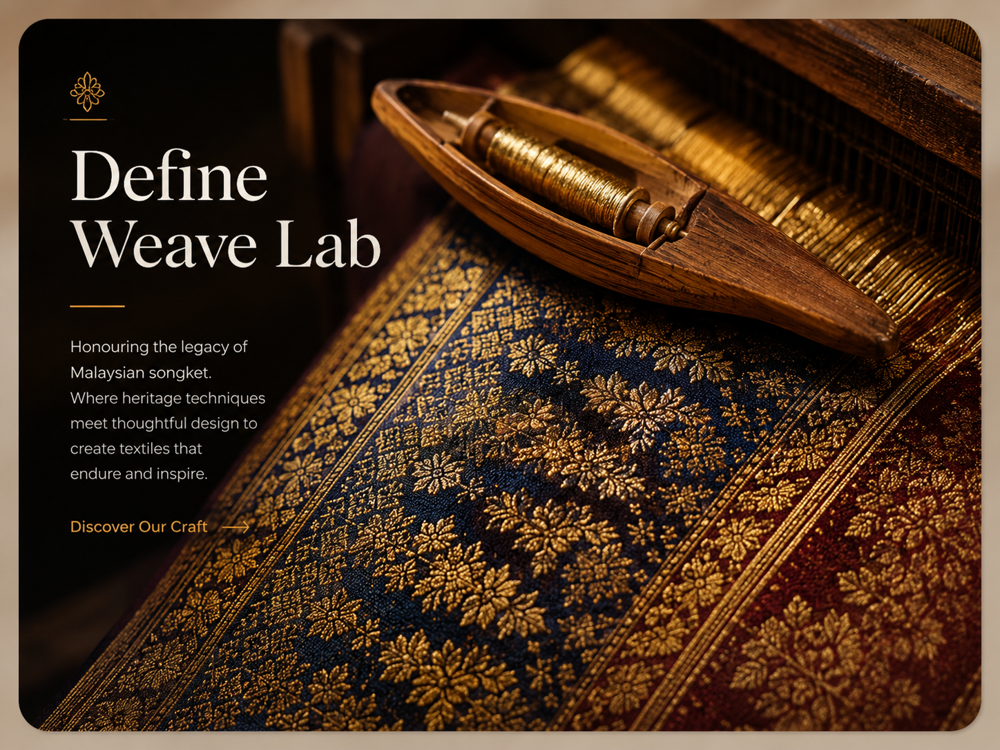

DAY 1
DAY 1Discover & Empathise
T01–T04
A creative national experience for Politeknik Malaysia students to explore heritage, innovate with purpose, and shape meaningful solutions through Design Thinking.

Follow these simple steps to prepare, participate and make the most of Camp21.
Students, lecturers, judges and organisers working through culture, creativity and innovation.
Turn cultural insights into meaningful solutions.
DAY 1T01–T04

DAY 2T05–T10
 DAY 3
DAY 3T11–T14
DAY 4Final showcase.